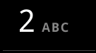
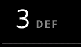
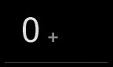
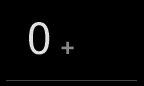

from com.criticalpath.seemonkey import SeeMonkey
from com.android.monkeyrunner import MonkeyDevice
from org.sikuli.script import Settings
Settings.MoveMouseDelay = 0.01
Settings.AutoWaitTimeout = 10
print "set up android connection"
scr = SeeMonkey() # compatiable with Sikuli Screen/Region
assert scr != None
dev = scr.getMonkeyDevice() # Android Monkey device
scr.autoDelay = 500
keypad = {"1":,
"2":,
"3":,
"4":,
"5":,
"6": ,
"7":,
"8":
,
"7":,
"8": ,
"9":,
"0":}
#scr.wake()
#if scr.exists("1321123632123.png"):
# scr.dragDrop("1321123632123.png","7.png")
scr.click(
,
"9":,
"0":}
#scr.wake()
#if scr.exists("1321123632123.png"):
# scr.dragDrop("1321123632123.png","7.png")
scr.click( )
scr.wait(
)
scr.wait( )
scr.click()
scr.wait(
)
scr.click()
scr.wait( )
scr.click(keypad["5"])
scr.click(keypad["0"])
scr.click(keypad["3"])
scr.click(keypad["4"])
scr.click(keypad["6"])
scr.click(keypad["7"])
scr.click(keypad["1"])
scr.click(keypad["2"])
scr.click(keypad["3"])
scr.click(keypad["5"])
scr.click()
scr.sleep(3000)
scr.wait(
)
scr.click(keypad["5"])
scr.click(keypad["0"])
scr.click(keypad["3"])
scr.click(keypad["4"])
scr.click(keypad["6"])
scr.click(keypad["7"])
scr.click(keypad["1"])
scr.click(keypad["2"])
scr.click(keypad["3"])
scr.click(keypad["5"])
scr.click()
scr.sleep(3000)
scr.wait( )
)